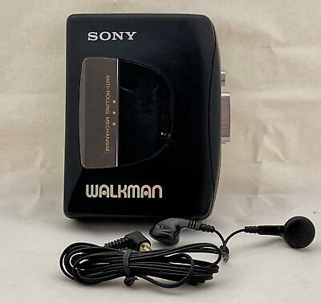

Welcome to the World of Sony Walkman
The Sony Walkman revolutionized music portability in 1979, letting people carry their favorite tunes anywhere. It became a cultural symbol of freedom and style.
Explore the LegacyWhy Sony Walkman?
Portable Freedom
Carry your music anywhere—jogging, commuting, or relaxing outdoors.
Iconic Design
Sleek, lightweight, and trendy—a style icon of the 80s and 90s.

Exceptional Sound
Crisp audio quality that brought music to life.